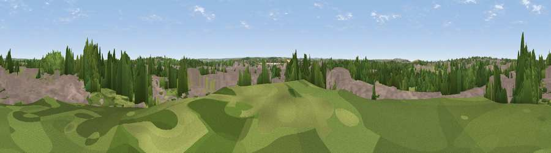

Viewpoint near Aveley
#34352 in England · top 44% of its area beats it · near AveleyThe view, rendered

A 360° render of this exact spot computed from the terrain model, tree cover and land cover — summer colours, afternoon light, calibrated against photographs of famous viewpoints. Real trees, hedges and buildings will differ in detail.
The panorama
Grey silhouette: terrain skyline in each direction (720 bearings, Earth curvature and refraction included). Dashed green: skyline with trees (+15 m) and buildings (+8 m) as obstacles. Blue strip: how far the ground is visible on each bearing.
Where the view opens
Wedge length = distance to the farthest visible ground on that bearing (vegetation-aware). Rings at 10, 25 and 50 km.
What fills the view
48% built-up · 36% woodland · 14% grassland · 1% water ·
Angular shares of the visible panorama (visual magnitude), not map area. Landscape diversity 0.49 (0–1 Shannon).
Key numbers
More beautiful places nearby
The staircase of upgrades: each row has a higher view potential than everything closer. Driving times are estimates from straight-line distance, calibrated against real road routing — check an actual route before setting out.
| Place | Direction | Drive | Score |
|---|---|---|---|
| Viewpoint near Aveley | NE · 1 km | ~2 min | 41.1 |
| Sandy Lane Pit | NW · 3 km | ~6 min | 51.1 |
| Viewpoint near Erith | W · 5 km | ~12 min | 54.3 |
| Viewpoint near Ebbsfleet Valley | SSE · 7 km | ~14 min | 56.1 |
| Viewpoint near Horndon On The Hill | ENE · 12 km | ~22 min | 58.8 |
| Viewpoint near Vigo Village | SSE · 19 km | ~33 min | 61.9 |
| Viewpoint near Birling | SSE · 19 km | ~33 min | 65.2 |
| Viewpoint near Wrotham | S · 20 km | ~34 min | 66.6 |
51.48999, 0.26973 · source: screening · position refined by local search. Computed location — check access rights before visiting.